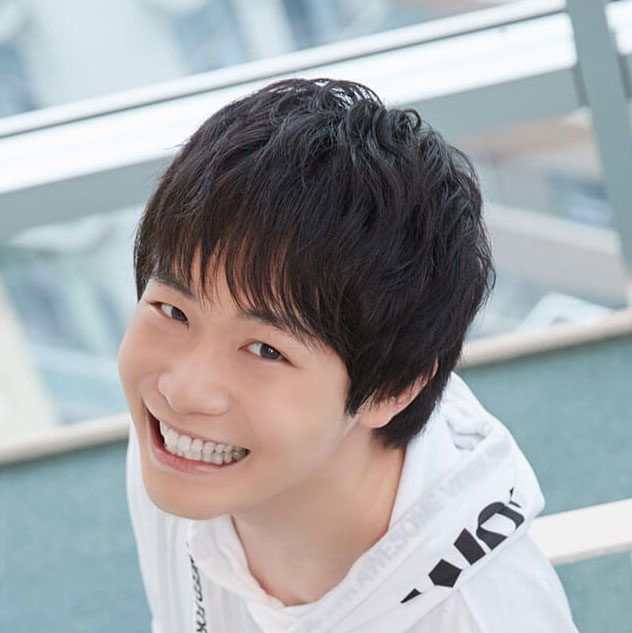

【声マガ・インタビュー】佐藤 元
TOPICS
PROFILE
アイムエンタープライズに所属する佐藤元さんは、神奈川県出身の3月22日生まれ。『Dr.STONE』（クロム役）、『マルチポイント×コネクション～稜風学園購買部』（大澄暁空役）等に出演。2019年10月放送の『星合の空』では、布津凛太朗役で出演。
音楽を聴くことが大好きという佐藤さん。最近ハマったのが、米国の大人気テレビシリーズ『glee/グリー』で使われた『Light up the world』と『Don’t stop believin’』。演技することに苦しんでいたとき、この曲から「何も怖くない、楽しめばいいんだ」と力をもらったと微笑みます。そんな佐藤元さんに、声優をめざしたきっかけと日本ナレーション演技研究所（以下、日ナレ）で学んだことや、今後の目標についてお話していただきました。
たくさんの人がきっかけをくれた声優という道
声優という仕事を意識したのはいつ頃ですか？
中学2年のときです。当時、色んな悩みを抱えて将来に対して迷っていた時期がありました。そんなとき、偶然、アニメ『STAR DRIVER 輝きのタクト』を観て、まっすぐでさわやかな主人公にすごく勇気をもらって。それをきっかけにアニメが好きになり、いろいろ観るうちに、声優という職業があることを知りました。
では、声優をめざしたきっかけを教えてください。
高校生のときに関わった人たちがきっかけです。つらい時期でも笑顔で過ごし続ける人や、まっすぐ夢を語る友人や身近な人たちの姿を間近で見ていて、なんて強い人たちなんだろうと思い、人間について知りたいと強く思いました。そして、役者という仕事ならそれができるのではないかと考えるようになりました。また、自分に勇気をくれたアニメの世界で生きたい、さらに、家族が与えてくれた自分の名前を形にして残したいと思いました。この条件が叶うのが声優という仕事でした。
それからすぐに声優になるために行動を起こしたのですか？
家族に伝えたところ反対はされませんでしたが、大学には通うように言われました。僕も家族が従事していた福祉について勉強したいと思っていたので、大学に通いながら養成所に行こうと決めて、大学入学と同時に日ナレに通い始めました。
日ナレを選んだ理由を教えてください。
レッスンが週１回で、学費が他と比べて安かったことが大きかったです。これなら大学に通いながら、学費もバイトをすれば自分でなんとかできるのではないかと思いました。
実際、入所してからの生活はいかがでしたか？
平日は大学で勉強をしてバイトや家事もしつつ、日曜は日ナレに通って空いた時間はすべて演技の練習に使っていました。今、振り返っても、我ながらよく耐えたなって思います（笑）。でも、それだけ声優になりたいっていう気持ちが強かったし、早く声優になりたかったんですよね。
日ナレの講師と仲間たちのおかげで今僕はここにいる
入所した頃の日ナレの印象について教えてください。
演技したこともなければ芝居について何も知らない僕には、できないことが多すぎてきつかったです。でも、本気で声優になりたいという熱意をもったクラスメイトたちと一緒に練習することで、厳しいレッスンを乗り越えることができました。
基礎科のレッスンはいかがでしたか？
声優という仕事があることを知った中学2年の頃から独学で発声やかつ舌の練習をしていて、正直、自分のやり方が正しいのかどうかずっと不安でした。基礎科の講師の方は、なぜ発声やかつ舌が大切なのかから始まって、練習法など、初歩から丁寧に論理的に教えてくださったので、正しかったことや間違えていたことがきちんと理解できました。
基礎科の講師から言われたことで記憶に残っていることはありますか？
「声優である前に、役者であることを絶対忘れてはいけない」ということを教えていただきましたが、これはプロになった今も、一番肝に銘じていることです。声優は身振り手振りや顔の表情で表現できない分、俳優以上に役者であることを考えていなければできない仕事だと思います。顔出しのお仕事でも、歌を歌うときでも、どんな現場においても僕は、自分が役者であることを決して忘れないようにしています。
本科のレッスンはいかがでしたか？
僕にとって、演技とは何かを知る1年でした。実は、基礎科の終わりの所内オーディションで最終審査まで行ったとき、日本全国から選ばれた人たちの演技を見て、自分はお芝居ができないということをまざまざと感じさせられたんです。今までの努力ではぜんぜん足りない！呼吸するレベルで努力しないとみんなに追いつけないと思ったので、それまで以上に毎日お芝居の練習に時間を費やして。でも、簡単にできるようにはならないし、見えないゴールに向かってひたすら歩いている感じで、「わかんないよー」って泣きながら、がむしゃらに練習した1年でした。
どうやってつらい状況を乗り越えたのですか？
講師の方と仲間たちのおかげです。舞台形式のレッスンでは、講師の方は、なぜ、今、その動きになったのかを僕に問い、答えられないでいると一緒に考えようと言ってくださったり、僕がどう演技したらいいのかわからなくなったときは、じゃあ、なぜ、今わからないのか一緒に考えようと言ってくださって、答えは絶対に言わず、とにかく自分で考えさせられ、それをそばで支えてくれました。つらい作業ではあったけれど、その分、それまでできなかったことができた瞬間、めちゃめちゃ気持ちよくて、やればやるほどお芝居の魅力に取りつかれていきました。本科の1年がなかったら、今もこうしてお芝居を好きでいられなかっただろうなって思います。
研修科のレッスンはいかがでしたか？
初めてマイクに触れさせていただけるということで、最初は緊張しましたが、講師の方が、お仕事では失敗できないけれど、今は失敗していいのだから、思い切って挑戦しなさいと言ってくださって、とても勉強になりました。挑戦する機会を与えていただいて、本当に感謝しています。
本番前は自分をニュートラルに
事務所に所属したのはいつですか。
本科の終わりに受けた所内オーディションで合格して、アイムエンタープライズに所属しました。
合格した時の気持ちを教えてください。
本科の1年間は、合格を目標に、世界で一番努力するって決めてがんばってきたので、夢が叶ってうれしかったけど、同時に本当に声優の道で自分はやっていくのか、果たして自分にできるのか、恐怖も感じました。
どうやって気持ちを切り替えたのですか？
オーディションで負け続けても、絶対に何かを持ち帰るんだという覚悟で挑もうと考えました。たとえば、オーディションに落ちたら、自分に何が足りないのか勉強できるし、お仕事に行って、マイク前に立ってできなかったら、何がダメだったのか分析できる。実際は、オーディションに落ちたり、現場で思うようにできなかったりすると、悔しくて泣きながら帰ってきてたんですけど（笑）、でも、きちんとその後分析して、次に活かせるようにと取り組んできました。
頑張れる原動力になったのはなんですか？
日ナレの同期の活躍です。僕と同じ時期に事務所に所属した人のなかには、1年目で大人気作品のメインキャラをオーディションで勝ち取った人もいて、僕もその現場に参加させていただいたんですが、正直、嫉妬もして悔しかったです。でも、同期がどれだけ頑張ってきたかずっと養成所の時から見てきたので、僕も音を上げるわけにいかないって思えました。今も同期のみんなと仲良くしているのですが、みんなの活躍はいつも励みになっています。
デビュー当初の作品で最も印象に残っているものを教えてください。
オーディションで初めて受かったのが、ゲーム『マルチポイント×コネクション～稜風学園購買部～』の主役だったのですが、それまでオーディションに落ち続けてきたから本当にうれしくて、受かったと聞いたときは、大泣きしてしまいました。
その作品では、歌も歌われていましたね。
元々、歌うこと自体は大好きなのですが、お仕事として、しかもキャラクターとして歌うのは初めてだったので、ものすごく新鮮でした。歌詞を読み解くことはとても難しかったけど、その後は新しい視点で台本に向き合えるようにもなり、すごくいい経験になりました。
ご自身の考える声優の仕事の魅力について教えてください。
非日常を日常的に演じられることだと思います。僕自身は、手から魔法は出せないし、空を飛べないし、目からビームは出せないけど、それができるキャラクターになりきれるんですから。そんなふうに想像することしかできないキャラクターを声だけという制限の中でどう演じるか考え抜くのは大変です。でも、その大変さこそが魅力だし、僕は楽しいと感じています。さらにそれが一人でも誰かの心に届いたとき、お芝居をしていてよかったなって感じます。つらかった中学時代に自分がアニメから勇気と元気をもらったように、僕も誰かに届けられたらいいなと思います。
そういう声優になるために意識してやっていることはありますか？
日ナレの基礎科の講師の方に「最終的に心の中に残ったものが演技をするときの糧になる」と教わったので、映画でも舞台でもドラマでも小説でも歌でも、気になったものは観たり聴いたりして、心に栄養をいっぱい入れるようにしています。
本番前にやっていることはありますか？
以前はギリギリまで台本を確認していましたが、今は瞑想しています。というのも、以前、頑張りすぎて声をつぶしたとき、音響監督さんに「面白くしようとしなくていいから」と言われたことがありまして。その意味を考えたとき、僕が面白くしようとしなくても、おもしろい台本があって、魅力的なキャラクターがいるのだから、僕はただそこにいればいいんだって気がついて、肩の力がスッと抜けたんです。だから本番前はただその役になりきれるように、自分をニュートラルな状態に戻して、内面を落ち着かせることを考えています。
今後、どんな声優になりたいか教えてください。
佐藤元はいい役者なんだよって言っていただけるような存在になりたいです。例えば、子どもの頃に観たアニメで大人になっても忘れない大好きなキャラクターっていますよね。そんなふうに、自然とみんなが好きになる、あるいは悪役ならとことん嫌われるなど、佐藤元という存在はナシに、役だけがその人の心の中に残るような声優になりたいです。
最後に声優をめざしている方へメッセージをお願いします。
まずは、自分に才能があると過信しないことです。才能のある人はいくらでもいるし、その人たちも常に努力をしていますから、そんな中で自分も努力し続けるためには、自分は人より劣っているということを自覚することが必要だと思います。よく、信じていれば夢は叶うと言うけれど、信じているだけではダメで信じ続けて他人より努力できることが必要だと僕は強く感じています。「好きこそものの上手なれ」という言葉があるように、好きでいられれば頑張れます。僕自身、まだ思うようにできなくて悔しくて泣くことがいっぱいあるけれど、好きだからこそ頑張れています。あと、最後にもう一つ、ご縁を大事にしてください。僕は、日ナレで本気で声優をめざして頑張る素晴らしい仲間たちと、信頼できる講師の方々に出会え、今、ここにいることができています。また、声優の仕事は、ひとりではできません。共演者だけでなく、原作者、アニメーター、音響や技術スタッフ、ひとつの作品にはものすごく多くの人が関わっています。スタッフや関係者の皆さんのおかげでお仕事ができているということを僕はいつも肝に銘じるようにしています。同じ役者として、努力し続けて、一緒に頑張りましょう！
プロフィール
佐藤 元
- 所属事務所
- アイムエンタープライズ
主な出演歴
- 星合の空(布津凛太朗)
- Dr.STONE(クロム)
- ハイスコアガール(後藤)



{kind=link}
{kind=link}
{kind=link}
{kind=link}
{kind=link}
{kind=link}